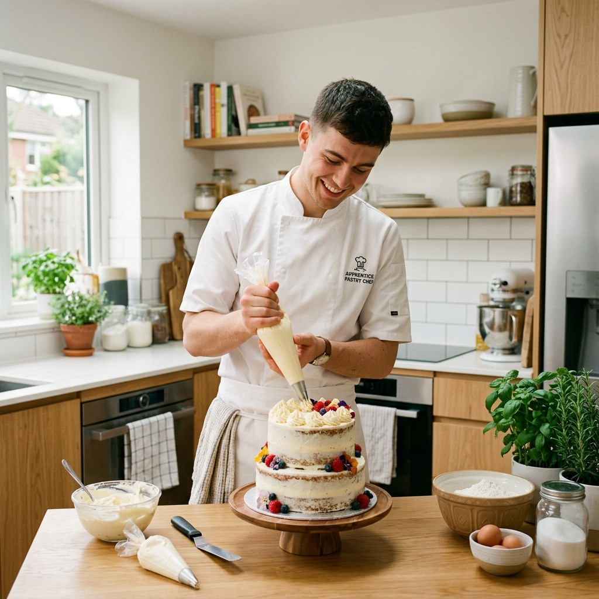
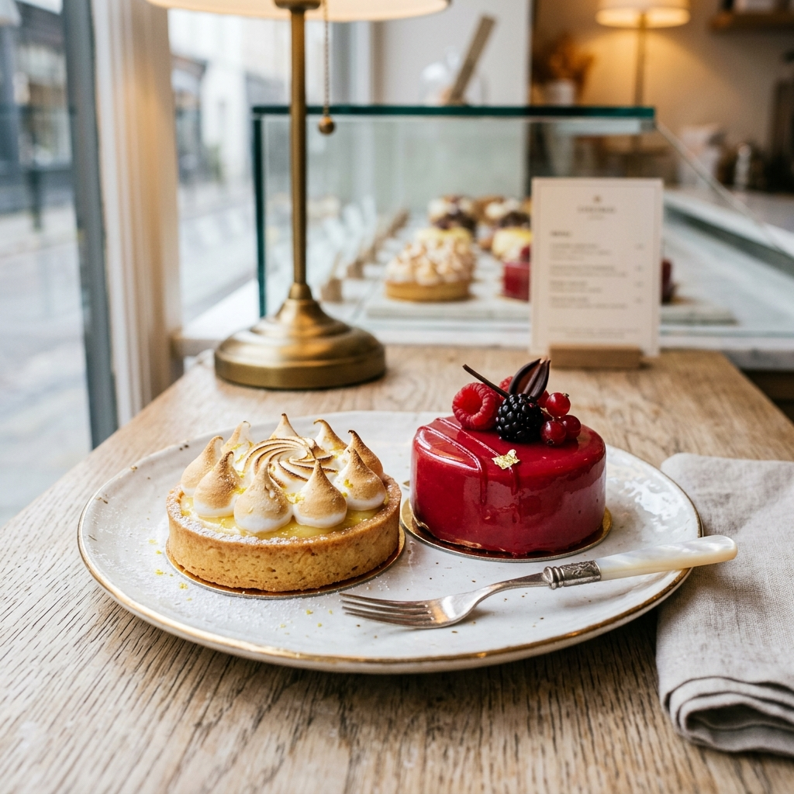

Préparez votre CAP Pâtissier à votre rythme avec un coach disponible 24h/24
Un parcours structuré semaine après semaine pour apprendre les bases de la pâtisserie, progresser en pratique et préparer sereinement l'examen du CAP Pâtissier en candidat libre.
✓ 5 semaines gratuites
✓ Accessible aux débutants
✓ Disponible sur ordinateur et mobile
✓ Sans engagement

Pourquoi tant de candidats abandonnent-ils ?
Préparer l'examen seul en candidat libre présente des difficultés réelles au quotidien :
📁
Le manque d'organisation
Sans calendrier fixe, il est difficile de répartir son temps d'apprentissage sur l'année.
🔍
La difficulté à savoir quoi apprendre
Le référentiel officiel du CAP est complexe et difficile à traduire en étapes concrètes.
👥
L'absence d'accompagnement
Ne pas avoir de retour immédiat sur ses gestes ou la texture de ses préparations mène à l'erreur.
📉
Le manque de motivation
Travailler seul dans sa cuisine favorise l'isolement et la perte de régularité.
⚖️
La difficulté à s'auto-évaluer
Faute de critères clairs, il est difficile de savoir si sa réalisation correspond aux exigences du jury.
Une méthode simple et progressive
Découvrez notre parcours conçu pour vous amener vers l'autonomie, étape par étape.

1
Découvrir les bases
Assimilez l'organisation de l'espace de travail, les mesures de précision et l'hygiène élémentaire.
2
Apprendre les techniques
Comprenez le geste technique (fonçage, pochage, crémage, sablage) avec des fiches détaillées.
3
S'entraîner avec des recettes guidées
Réalisez les desserts phares du programme du CAP, du gâteau de voyage à l'entremets complexe.
4
Évaluer ses progrès
Analysez vos propres résultats visuels et gustatifs à l'aide de grilles d'auto-évaluation précises.
5
Préparer l'examen
Entraînez-vous dans les conditions réelles avec des plannings d'examen blanc sur 4 à 5 heures.
Un programme pédagogique complet
Tout ce dont vous avez besoin pour structurer votre apprentissage sur un an.
📚
Modules de formation
52 modules hebdomadaires répartis selon le programme officiel.
📝
Fiches techniques
Des résumés clairs des gestes de base pour les garder près du plan de travail.
❓
Quiz
Des évaluations régulières pour vérifier vos connaissances en technologie et en hygiène.
🍳
Exercices
Des ateliers pratiques focalisés (ex: dresser 12 choux réguliers) pour entraîner votre main.
📖
Recettes guidées
Des fiches recettes détaillant chaque étape et les critères de réussite attendus par le jury.
📅
Planning de progression
Un tableau de bord clair pour cocher vos acquis et organiser vos séances.
📕
Glossaire pâtissier
Tous les termes professionnels du référentiel définis simplement.
💬
Coach conversationnel
Un guide disponible à tout moment pour répondre à vos doutes et adapter ses conseils à votre four.
Découvrez l'interface de travail
Un outil épuré et fonctionnel conçu pour vous accompagner en cuisine.
💬 Le chat avec le Coach
Posez vos questions librement. L'IA analyse votre problème de cuisson ou de pâte et vous guide vers la solution.
Coach : Si ta crème a grainé, c'est souvent un problème de différence de température entre le beurre et la crème pâtissière...
Élève : Est-ce que je peux la rattraper ?
Coach : Oui ! Tu peux la réchauffer très légèrement au bain-marie tout en fouettant doucement...
📖 Fiche Recette
Une structure claire : ingrédients, matériel requis et étapes pas à pas avec critères de réussite exigés par le jury.
Abaisser la pâte sablée à 3mm. Enrouler sur le rouleau, dérouler sur le cercle beurré de 22cm. Créer un angle droit parfait à la base.
✓ Critère du jury : Bord de hauteur régulière, pas de trous.
❓ Le Quiz d'Auto-Évaluation
Validez vos connaissances théoriques (Hygiène HACCP, Technologie des aliments) après chaque bloc.
Question : Quelle est la température réglementaire de conservation des crèmes pâtissières après cuisson ?
✓ a) +3°C maximum (température réglementaire)
b) +10°C maximum
c) Température ambiante
Explication : Toutes les préparations à base d'œufs doivent être refroidies rapidement et stockées entre 0°C et +3°C.
📋 Le carnet de bord de progression
Cochez vos étapes, suivez votre avancée à travers les blocs de formation et visualisez vos acquis.
Bloc 2 : Pâtes à tartes — 60% validé
✓ Pâte sablée (Terminé)
✓ Fonçage d'un cercle (Terminé)
◽ Tarte citron meringuée (À faire)
À qui s'adresse ce programme ?
Une méthode inclusive conçue pour s'adapter à votre projet personnel.
🔄
Adultes en reconversion
Pour ceux qui changent de carrière et recherchent une formation flexible compatible avec leur emploi actuel.
🎓
Futurs candidats libres
Pour préparer l'épreuve sans être inscrit en école ou en CFA.
🌱
Débutants complets
Aucun prérequis technique n'est nécessaire. Nous reprenons tout depuis le départ.
🧁
Passionnés de pâtisserie
Pour ceux qui souhaitent simplement acquérir la rigueur et les gestes de la pâtisserie professionnelle française.
⏱️
Emplois du temps chargés
Le découpage en séances courtes vous permet d'avancer à votre propre rythme, quelques heures par semaine.
Le programme d'apprentissage
Développez la rigueur technique d'un professionnel au fil des semaines.
Pâtes de base
Pâte brisée, sablée, sucrée, feuilletée, pâte à choux, pâtes levées et brioche.
Crèmes et Appareils
Crème pâtissière, anglaise, diplomate, mousseline, crème d'amande, ganaches et meringues.
Viennoiserie
Tourage, pousse des pâtes, façonnage des croissants, pains au chocolat et brioche tressée.
Organisation & Hygiène
Règles sanitaires HACCP, marche en avant, nettoyage, désinfection et chaîne du froid.
Gestes techniques
Mesures de pesées, émulsion, foisonnement, fonçage de cercles et pochage à la douille.
Décoration & Finitions
Glaçage au fondant, nappage, dorures, décors en chocolat simples et présentation de vitrine.
Une tarification claire et accessible
Les 5 premières semaines sont offertes. Choisissez la formule qui vous convient pour débloquer l'accès complet.
Type de formation
Coût financier
Format & Accompagnement
Cours présentiels (CFA / Écoles)
800 € à 3 000 € / an
Horaires rigides, partagés en groupe de 15 à 20 élèves.
Cours particuliers
25 € à 60 € / heure
Coût cumulé élevé sur l'année, rendez-vous fixes.
CAP Pâtissier.AI (Premium)
399 € ou mensualités (500 € total)
Accès 24h/24, 52 semaines de cours complets et module Business.
Foire Aux Questions
Toutes les réponses à vos interrogations sur la formation.
Faut-il du matériel professionnel ?
Non. Le programme est spécifiquement pensé pour être réalisé dans une cuisine domestique. Le coach vous indique le matériel minimal (maryse, balance de précision, moules) et vous suggère des astuces de remplacement (comme des sacs congélation en guise de poche à douille).
Puis-je apprendre en partant de zéro ?
Oui. La formation est progressive. Les premières semaines sont dédiées aux bases de l'organisation, à l'utilisation de la balance et à des gâteaux simples pour calibrer votre four. Aucun niveau préalable en cuisine n'est requis.
Le programme est-il adapté au CAP ?
Oui. Les 52 semaines de cours suivent scrupuleusement le référentiel officiel du CAP Pâtissier (France) : pâtes, crèmes, viennoiseries, hygiène HACCP et technologie des aliments.
Combien de temps faut-il consacrer par semaine ?
Nous recommandons de consacrer entre 3 et 5 heures par semaine. Le programme est découpé en séances courtes pour vous permettre de réviser la théorie et de pratiquer le week-end selon vos disponibilités.
Puis-je utiliser uniquement mon téléphone ?
Oui. Notre application est entièrement responsive et mobile-first. Vous pouvez l'utiliser sur smartphone, tablette ou ordinateur près de votre plan de travail.
Comment fonctionne l'essai gratuit de 5 semaines ?
L'accès aux 5 premiers modules hebdomadaires (Bloc 1 : Bases & Organisation) est 100% gratuit et ouvert à tous, sans qu'aucune saisie de carte bancaire ne soit demandée.
Qu'est-ce qui est inclus dans l'accès Premium ?
L'accès Premium débloque l'intégralité du parcours (Semaines 6 à 52), tous les quiz d'évaluation, les fiches techniques avancées, les simulations d'examen pratique et le module complet de création d'entreprise (Bloc 8).
Quelles sont les formules de paiement pour l'accès Premium ?
Vous pouvez régler en une seule fois au tarif de 399 €, ou opter pour un paiement échelonné par mensualités de 100 € par mois (pour un total de 500 €).
Le coach peut-il corriger mes erreurs de cuisson ?
Oui. Vous pouvez lui décrire le résultat de vos gâteaux ou lui envoyer des photos. Il analysera les causes probables du défaut (four trop chaud, manque de repos de la pâte, etc.) et vous donnera 1 à 3 pistes d'amélioration.
Le programme aborde-t-il les règles d'hygiène HACCP ?
Oui. L'hygiène, la désinfection du plan de travail, la marche en avant et le respect de la chaîne du froid sont intégrés et évalués de manière systématique tout au long du programme.
Puis-je adapter les recettes si j'ai des contraintes alimentaires ?
Oui. Le coach peut vous proposer des alternatives adaptées (sans gélatine porcine, sans alcool, ou avec des substituts de lait), tout en vous rappelant la version classique exigée le jour de l'examen.
Qu'est-ce que le module Business post-CAP ?
C'est un module de 4 semaines conçu pour vous aider à lancer votre micro-entreprise après l'obtention du diplôme : gestion de la tarification, élaboration d'une gamme de produits rentable et marketing de départ.
Y a-t-il des examens blancs ?
Oui. Le Bloc 6 (Semaines 31 à 40) contient des simulations de sujets partiels et complets pour vous entraîner à gérer votre temps (épreuves de 4 à 5 heures) et à dresser votre rétroplanning.
Puis-je exporter ma progression ?
Oui. Un bouton de réinitialisation et de gestion locale vous permet de maîtriser vos données. La progression est enregistrée localement dans le cache de votre navigateur.
Quelle est la durée de validité de mon accès ?
Une fois débloqué, votre accès à CAP Pâtissier.AI est permanent et illimité. Vous pouvez réviser et utiliser l'outil aussi longtemps que vous le souhaitez.
Commencez gratuitement aujourd'hui
Découvrez la méthode pendant 5 semaines sans engagement.
Four électrique ⚡0% complété
Mon Parcours de Reconversion
Suivez le programme officiel du CAP Pâtissier semaine après semaine.
Mode Essai (S1-S5) 🎁
💬 Conversation avec Coach IA
Posez vos questions sur la théorie, les pâtes ou vos techniques de préparation.
Bienvenue dans ton espace d'entraînement CAP Pâtissier.AI ! 🧁 Je suis là pour t'accompagner pas à pas dans l'apprentissage des gestes professionnels. Quelle étape du programme étudions-nous aujourd'hui ?
📖 Glossaire Technique Officiel
Maîtrisez le vocabulaire professionnel exigé par le jury d'examen.
🛡️ Vie Privée & Mentions Légales
Zéro Compte obligatoire, Sécurité Maximale.
Conformément aux principes de minimisation du RGPD, nous ne stockons aucune de vos données personnelles sur un serveur.
Progression : Sauvegardée exclusivement dans la mémoire de votre navigateur (localStorage). Elle ne quitte jamais votre appareil.
Conversations : Les messages envoyés au coach sont traités de façon éphémère par l'API pour générer les réponses pédagogiques. Aucun historique de chat n'est persisté sur nos serveurs.
Clé API : Sécurisée côté backend, aucune clé de service n'est exposée sur le client.
Les conseils prodigués par le coach sont à but pédagogique et indicatif pour l'examen du CAP Pâtissier. Ils ne se substituent pas à des normes d'hygiène professionnelles réelles ou à des conseils médicaux/nutritionnels.
🧁 Configurez votre profil d'apprentissage
Ajustez vos options pour que le coach CAP Pâtissier.AI adapte parfaitement ses réponses à votre cuisine.
🔒 Débloquer le reste de ma formation
Vous avez accédé aux 5 premières semaines gratuites. Pour débloquer l'intégralité des 52 semaines de cours, les quiz avancés et le **Bloc 8 Business**, choisissez votre formule de paiement :
💳 Paiement Unique
399 €
Accès complet à vie au programme, sans frais cachés.